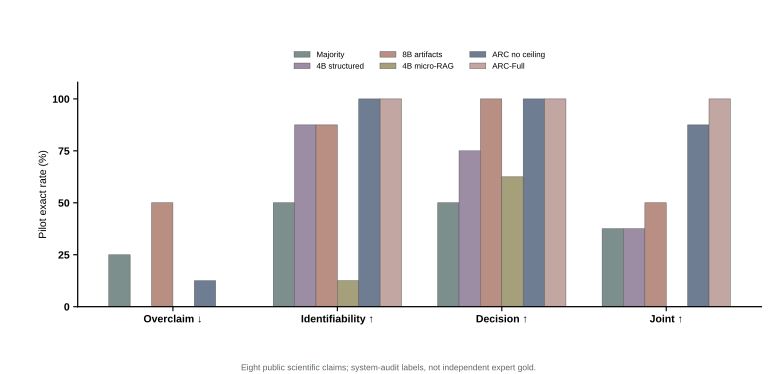
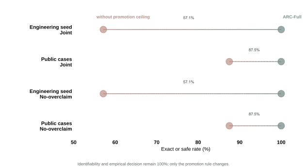

Claim graph
Separate observation, target, assumptions, evidence, and scope.
claim → target | scopeA scientific result can reproduce, predict, or correlate—and still leave several mechanisms compatible with the measurements. ARC-Lean separates empirical decision, identifiability, and the strongest conclusion the evidence is licensed to support.
Scope. This page reports a descriptive engineering/public-case pilot. Public labels are system-audit labels, not independent expert gold; the sealed 400-claim study remains future work.
Mechanism A matches the observed evidence and changes under intervention.
Mechanism B matches the same evidence but responds differently.
Most scientific evaluation collapses evidence retrieval, empirical fit, causal identification, and claim wording into one judgment. ARC-Lean makes each obligation explicit.
The system records assumptions and evidence first, searches for a competing world second, uses Lean for conditional bookkeeping, and only then licenses a conclusion or asks for a discriminating measurement.
Separate observation, target, assumptions, evidence, and scope.
claim → target | scopeApply a preregistered rule to the available artifact.
supported / falsified / ?Find two admissible worlds with equal observables and unequal targets.
h(w₁)=h(w₂), θ₁≠θ₂Kernel-check the conditional non-identifiability obligation.
¬ Identifies h θRank a measurement or intervention that separates live alternatives.
do(x): p₁ ≠ p₂These examples combine one engineering claim with two current public scientific cases. Switch between the full audit and a decision-only promotion rule to see why a correct empirical label need not license a mechanistic conclusion.
The first-round table has 16 method rows across a 14-case engineering seed and eight public scientific cases. These values validate the benchmark plumbing and component contrasts—not population generalization.
Micro-RAG retrieves a relevant source in every top-four set, yet both local models miss the full ID + decision + ceiling joint target.
The 8B sanitized-artifact arm reaches 100% public decision exact but only 50% joint exact and 50% overclaim.
Holding seed ID and decision at 100%, removing only ceiling enforcement produces three overclaims in fourteen cases.


Lean checks that the formal conclusion follows from encoded assumptions. It cannot certify that the assumptions describe the material, that evidence extraction is correct, or that the admissible model class is complete.
theorem sameObservation_differentTarget
(hobs : observe w₁ = observe w₂)
(htarget : target w₁ ≠ target w₂) :
¬ Identifies observe target := by
intro h
exact htarget (h w₁ w₂ hobs)Filter the 16 rows by method family. Dashes denote unavailable cells, never zeros. The production study will replace exact rates with paper-clustered estimates on a temporally disjoint, expert-annotated sealed test.
| Family | Method | Engineering seed | Public cases | ||||||
|---|---|---|---|---|---|---|---|---|---|
| OC↓ | ID↑ | Dec↑ | Joint↑ | OC↓ | ID↑ | Dec↑ | Joint↑ | ||
The site labels provisional evidence in place, so the same maintained repository can grow into the eventual TMLR submission package without rewriting the research narrative.
16 methods, two regimes, artifact and micro-RAG arms, component ablations, hash-bound provenance.
Complete blinded expert annotation and replace the overlapping NASICON benchmark item per the npj/TMLR split decision.
400 claims / 200 papers, temporal separation, five paired seeds, paper-cluster bootstrap intervals.
Measure invalid obligations caught and obtain blinded validity/minimality ratings for proposed closure experiments.
The public preview is intentionally compact; the repository retains source snapshots, build scripts, hashes, and the TMLR-compliant submission folder.